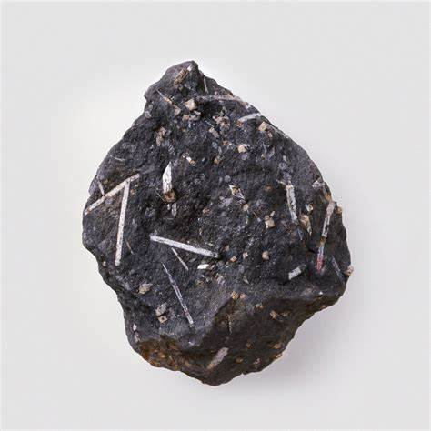

Slate

Slate is the finest grained metamorphic rock you can get. slate started off as a sedimentary rock before being metamorphosised. Not the best pet rock as it can be very dismissive but, fun fact, slate rocks can multiply into smaller slate rocks giving you many pets. Slate rocks are happy helping with DIY.
Quartzite

Quartzite, sandstone that has been converted into a solid quartz rock. Unlike sandstones, quartzites are free from pores and have a smooth fracture. Nice for decorative purposes. This pet rock can come in the shape of a kitchen side, being within your home at all times. Extremely happy preparing food with owner.
Hornfels
Hornfels. Hornfels is a fine-grained metamorphic rock formed by the action of heat on clay rocks, known as contact metamorphism. These rocks can be found in all shapes and sizes, from tiny millimetres to mountain sizes. Another pet rock that can be quite passive and show no emotion. Very happy watching the world go by.